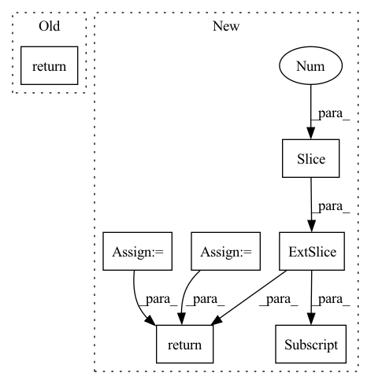

Pattern ID :2395

Before Change
x += self.b.expand_as(x)
pred = F.sigmoid(x)
return pred
if __name__ == "__main__":
config = dict()
After Change
def forward(self, batch, labels):
batch_size = batch.shape[0]
heads = batch[:, 0:1]
relations = batch[:, 1:2]
tails = batch[:, 2:3]
// batch_size, num_input_channels, width, height
heads_embs = self.entity_embeddings(heads).view(-1, 1, self.img_height, self.img_width)
relation_embs = self.relation_embeddings(relations).view(-1, 1, self.img_height, self.img_width)
tails_embs = self.entity_embeddings(tails).view(-1, self.embedding_dim)
// batch_size, num_input_channels, 2*height, width
stacked_inputs = torch.cat([heads_embs, relation_embs], 2)
// batch_size, num_input_channels, 2*height, width
stacked_inputs = self.bn0(stacked_inputs)
// batch_size, num_input_channels, 2*height, width
x = self.inp_drop(stacked_inputs)
// (N,C_out,H_out,W_out)
x = self.conv1(x)
x = self.bn1(x)
x = F.relu(x)
x = self.feature_map_drop(x)
// batch_size, num_output_channels * (2 * height - kernel_height + 1) * (width - kernel_width + 1)
x = x.view(batch_size, -1)
x = self.fc(x)
x = self.hidden_drop(x)
if batch_size > 1:
x = self.bn2(x)
x = F.relu(x)
scores = torch.sum(torch.mm(x, tails_embs.transpose(1, 0)), dim=1)
predictions = F.sigmoid(scores)
loss = self.compute_loss(predictions, labels)
return loss
In pattern: SUPERPATTERN
Frequency: 4
Non-data size: 7
Instances
Fragment ID: 8078202
Project Name: pykeen/pykeen
Commit Name: e310dc04ccd0763bef25540fb0a19a7423a27a94
Time: 2018-09-19
Author: ali-mehdi@live.de
File Name: src/kg_embeddings_model/conv_e.py
M Class Name: ConvE
N Class Name: ConvE
M Method Name: forward(3)
N Method Name: forward(3)
M Parent Class: nn.Module
N Parent Class: nn.Module
M File Name: src/kg_embeddings_model/conv_e.py
N File Name: src/kg_embeddings_model/conv_e.py
M Start Line: 116
M End Line: 151
N Start Line: 114
N End Line: 153
'>
Before Change
x10 = self.Conv_9(x9)
return x10
class DRPNN(nn.Module):
After Change
lms = inp[:, :-1, 2::self.ratio, 2::self.ratio]
pan = torch.unsqueeze(inp[:, -1, :, :], dim=1)
lms_hp = lms - self.dephtconv_ms(lms)
pan_hp = pan - self.dephtconv_pan(pan)
x = self.Conv2d_transpose(lms_hp)
net_inp = torch.cat((x, pan_hp), dim=1)
x1 = F.relu(self.Conv(net_inp))
x2 = F.relu(self.Conv_1(x1))
x3 = self.Conv_2(x2) + x1
x4 = F.relu(self.Conv_3(x3))
x5 = self.Conv_4(x4) + x3
x6 = F.relu(self.Conv_5(x5))
x7 = self.Conv_6(x6) + x5
x8 = F.relu(self.Conv_7(x7))
x9 = self.Conv_8(x8) + x7
x10 = self.Conv_9(x9)
x11 = inp[:, :-1, :, :] + x10
return x11
class DRPNN(nn.Module):
'>
Fragment ID: 8078219
Project Name: matciotola/z-pnn
Commit Name: b0c47bdabc552adc06d3b1a9a67412bd1a632f9b
Time: 2022-05-26
Author: Matt171018Cot!
File Name: networks.py
M Class Name: PanNet
N Class Name: PanNet
M Method Name: forward(2)
N Method Name: forward(2)
M Parent Class: nn.Module
N Parent Class: nn.Module
M File Name: networks.py
N File Name: networks.py
M Start Line: 43
M End Line: 65
N Start Line: 59
N End Line: 86
'>
Before Change
A = x[:, ::2, :, :]
B = x[:, 1::2, :, :]
A = A.view(N, 1, ord_num * H * W)
B = B.view(N, 1, ord_num * H * W)
concat_feats = torch.cat((A, B), dim=1).contiguous()
if self.training:
ord_prob = F.log_softmax(concat_feats, dim=1)
return ord_prob.view(-1, ord_num, H, W)
ord_prob = F.softmax(C, dim=1)[:, 1, ::]
ord_prob = ord_prob.view(-1, ord_num, H, W)
After Change
if self.training:
prob = F.log_softmax(concat_feats, dim=1)
ord_prob = x.clone()
ord_prob[:, 0::2, :, :] = prob[:, 0, :, :, :]
ord_prob[:, 1::2, :, :] = prob[:, 1, :, :, :]
return ord_prob
ord_prob = F.softmax(concat_feats, dim=1)[:, 0, ::]
ord_label = torch.sum((ord_prob > 0.5), dim=1).reshape((N, 1, H, W))
'>
Fragment ID: 8078207
Project Name: dontlovebugs/superviseddepthprediction
Commit Name: 07fe1714fc568b25bd80debe8dd3ab800ff576a8
Time: 2020-05-02
Author: wangxin_buaa@163.com
File Name: dp/modules/decoders/OrdinalRegression.py
M Class Name: OrdinalRegressionLayer
N Class Name: OrdinalRegressionLayer
M Method Name: forward(2)
N Method Name: forward(2)
M Parent Class: nn.Module
N Parent Class: nn.Module
M File Name: dp/modules/decoders/OrdinalRegression.py
N File Name: dp/modules/decoders/OrdinalRegression.py
M Start Line: 26
M End Line: 41
N Start Line: 28
N End Line: 45
'>
Before Change
block_forecasts = torch.stack(block_forecasts)
block_forecasts = block_forecasts.permute(1, 0, 2)
return forecast, block_forecasts
After Change
encoder_mask = encoder_mask.unsqueeze(-1)
level = encoder_y[:, -1:].repeat(1, decoder_x_t.size(1), 1) // Level with Naive1
block_forecasts = [level]
block_backcasts = [encoder_y[:, -1:].repeat(1, encoder_y.size(1), 1)]
forecast = level
for block in self.blocks:
block_backcast, block_forecast = block(
encoder_y=residuals, encoder_x_t=encoder_x_t, decoder_x_t=decoder_x_t, x_s=x_s
)
residuals = (residuals - block_backcast) * encoder_mask
forecast = forecast + block_forecast
block_forecasts.append(block_forecast)
block_backcasts.append(block_backcast)
// (n_batch, n_t, n_outputs, n_blocks)
block_forecasts = torch.stack(block_forecasts, dim=-1)
block_backcasts = torch.stack(block_backcasts, dim=-1)
backcast = residuals
return forecast, backcast, block_forecasts, block_backcasts
'>
Fragment ID: 8078210
Project Name: jdb78/pytorch-forecasting
Commit Name: a60fea51988c95548f47dd9fb76fa57258201160
Time: 2022-03-20
Author: beitner.jan@bcg.com
File Name: pytorch_forecasting/models/nhits/sub_modules.py
M Class Name: NHiTS
N Class Name: NHiTS
M Method Name: forward(6)
N Method Name: forward(6)
M Parent Class: nn.Module
N Parent Class: nn.Module
M File Name: pytorch_forecasting/models/nhits/sub_modules.py
N File Name: pytorch_forecasting/models/nhits/sub_modules.py
M Start Line: 343
M End Line: 363
N Start Line: 353
N End Line: 379